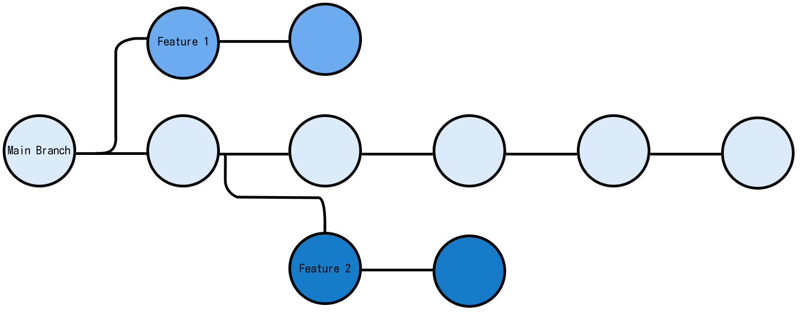

Background
In today’s fast-paced software development world, Git is not just a tool; it’s a fundamental skill. Not only does it help teams track and coordinate complex projects but its distributed nature distinguishes it from other SCM (source code management) tools. It’s no surprise that Git powers the majority of modern software projects, playing a vital role in development workflows. This guide delves into the core features of Git along with concepts including staging, branching and merging.
What is Git
At its simplest, Git is software that runs on your computer, recording and tracking every modification you make to your files. This is especially crucial for files containing code, as it enables developers to keep a detailed record of every change. But Git is much more than a simple tracker; as described by Wikipedia:
“Git is a distributed version control system that tracks changes in any set of computer files, usually used for coordinating work among programmers who are collaboratively developing source code during software development.”
This definition introduces the term “distributed version control system”. To break this down, A VCS (version control system) is a name given to a system responsible for recording changes made to files over time. Unlike traditional VCS, which rely on a central server to store all versions of a project, Git operates on a distributed model. Every developer’s computer holds a complete copy of the project history, enabling work to continue seamlessly even without a central server connection.
Understanding Version Control
A VCS archives every modification made to a file or set of files over time. This allows anyone to revert to a previous version, compare changes, or analyse the evolution of a project. Git’s distributed nature not only enhances project security, since every participant has a full backup but also significantly improves collaboration and flexibility. Developers can work independently on different features or fixes and later “merge” their changes without the risk of losing work or interfering with the main codebase.
The Power of Git
With Git, every clone of a repository is not just a snapshot of your project at a given time; it’s a comprehensive backup of your project’s entire history. This aspect is fundamental for resilient project management and enables a wide array of workflows that can be tailored to the needs of any development team.
Git Repositories
At the heart of Git’s powerful version control capabilities is the concept of repositories, or “repos” for short. A Git repository is essentially a database of your project’s history, tracking changes to your files over time. This history is stored in a special directory called the .git folder, which is created when you initialise Git in your project.
The .git folder contains more than just files; it houses the entire history of changes, branch information, and more.
Local vs. Remote
A local repository resides on your personal computer, allowing you direct access to your files and their revision history. In contrast, a remote repository is stored on a server accessible over the internet or a network, facilitating collaboration with others. Platforms like GitHub, GitLab, and Bitbucket are popular choices for hosting remote repositories.
Collaborating with Remote Repos
Remote repositories enable teams to work together on a project. By cloning a remote repo to your local machine, you gain access to the most recent version of the project. Changes made locally can be shared with the team by pushing them to the remote repository, ensuring everyone stays in sync.
Committing and Pushing Changes
A commit represents a snapshot of your project at a moment in time, allowing you to track the evolution of your code and revert to previous states if necessary. With descriptive commit messages, you can create a readable history of the project development. Pushing commits to a remote repository shares your changes with the team, facilitating collaboration.
Git requires your local repo to be up to date with the remote repo before allowing you to push any changes, ensuring a conflict-free workflow. If your colleagues have pushed updates to the repo while you were working on it locally, Git will ask you to first “pull” these changes, integrating them with your work, before you can “push” your commits.
Key Features of Git
Git’s unique combination features sets it apart from other VCS. These features are designed to enhance efficiency, reliability and flexibility in the modern development process, making Git an indispensable tool. From its speed and distributed architecture to its sophisticated branching model and beyond, Git’s capabilities address the complex needs of today’s software projects. In this section, we delve into the specific features that contribute to Git’s standing as the preferred VCS for so many professionals. Each of these features not only solves practical problems faced in software development but also opens up new possibilities for how teams can work together on code.
Fast
One of the features of Git that make it fast is that each user has a full local history of a repository and can create commits and inspect the file history without an internet connection. Additionally, most operations are performed locally, which makes Git a faster VCS alternative than centralised systems that require constant communication with a remote server.
Distributed
As mentioned earlier, when working in a team each member gets a full copy of the repository when they clone it, along with a full history of the commits so far. This means that in the event of a crash there is no single point of failure with Git, as every user has a copy of the main server (unless there is only a single copy of the repository).
In terms of development, a distributed system makes it easier to scale an engineering team. For instance with a centralised VCS, if a developer breaks the branch which contains the production code, other developers won’t be able to commit their changes until this is resolved. However, with Git this isn’t an issue, as everyone can continue working in their local repositories.
Git’s branching model
One of the unique aspects of Git that distinguish it from other SCM tools is its branching capabilities. Think of a branch as an isolated environment for experimenting with a new feature, fixing a bug or testing out an idea. If we are satisfied we can go ahead and merge it with the main branch. A local branch exists on the local user’s machine; the main branch typically contains the production code.

Users are encouraged to utilise multiple local branches that can be independent of each other for the reasons stated above (disposable experimentation, working on new features and trying out new ideas).
Additionally, it is not necessary to push all your local branches to the remote repository, you can decide which ones to share. Ultimately, this gives users the freedom to try out new ideas and alleviates the worry of having to plan when they are going to share them with the rest of the team.
Creation, merging and deletion of branches is extremely fast (takes seconds) and is a straightforward process.
Staging
Git’s “staging area” is a pre-commit holding area which allows you to review and format changes before making a commit. This gives developers the flexibility to selectively stage certain files without making a commit for all the modified files. This functionality extends to giving user’s the ability to stage and commit particular parts of files e.g. certain functions. This is particularly useful for keeping your project’s history organised and making sure each commit reflects a single logical change.
When working with Git, files can be in either one of three states:
- Modified: Changes have been made to the file but have not been staged.
- Staged: A modified file in it’s current version has been prepared for the next commit snapshot.
- Committed: The file has been stored in the local database.
Any workflow
A workflow is a recommendation for how to utilise Git for all members to accomplish work productively and consistently. Git’s distributed nature and intuitive branching system make it possible for an almost endless number of workflows to be implemented with relative ease. As Git is focused on flexibility there is no standardised process for how to interact with Git.
Data Integrity
Git ensures the integrity of code history through cryptographic hashes (SHA-1). Each commit is checksummed, guaranteeing the history’s integrity and immutability. Checksumming in Git involves generating a unique SHA-1 hash for each set of changes or commit. This hash acts as a fingerprint for that particular commit, encapsulating not only the changes made but also the context of those changes, including who made them, when they were made, and in relation to what other commits. This SHA-1 hash is a 40-character string composed of hexadecimal characters (0-9 and a-f) and represents a virtually unique identifier for that commit. This security feature is crucial for maintaining the reliability of a codebase, and is not commonly supported with centralised VCS.